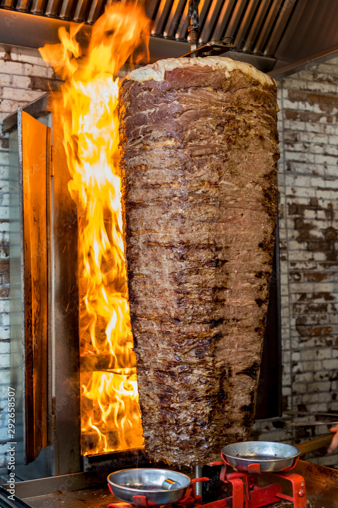

Broodje Döner
Döner kebab (döner betekent 'draaiend' in het Turks) is een van oorsprong Turks vleesgerecht van gekruid lamsvlees. Soms worden ook andere vleessoorten gebruikt zoals kalfsvlees, kip of kalkoen.

De eigenlijke döner (Yaprak döner) bestaat uit een dikke, ronde staaf van afwisselende laagjes gekruid vlees en vet, die aan een braadspit zijn geregen. De staaf wordt verticaal draaiend in een staande grill verhit en gebakken. Daarna worden plakjes ervan afgesneden met een speciaal mes of een elektrisch snijapparaat. Vervolgens wordt de döner geserveerd, bijvoorbeeld als schotel met rijst of friet en sla, tomaat en ui, of als broodje of als dürüm. Ook wordt het geserveerd op Turkse pizza's.
